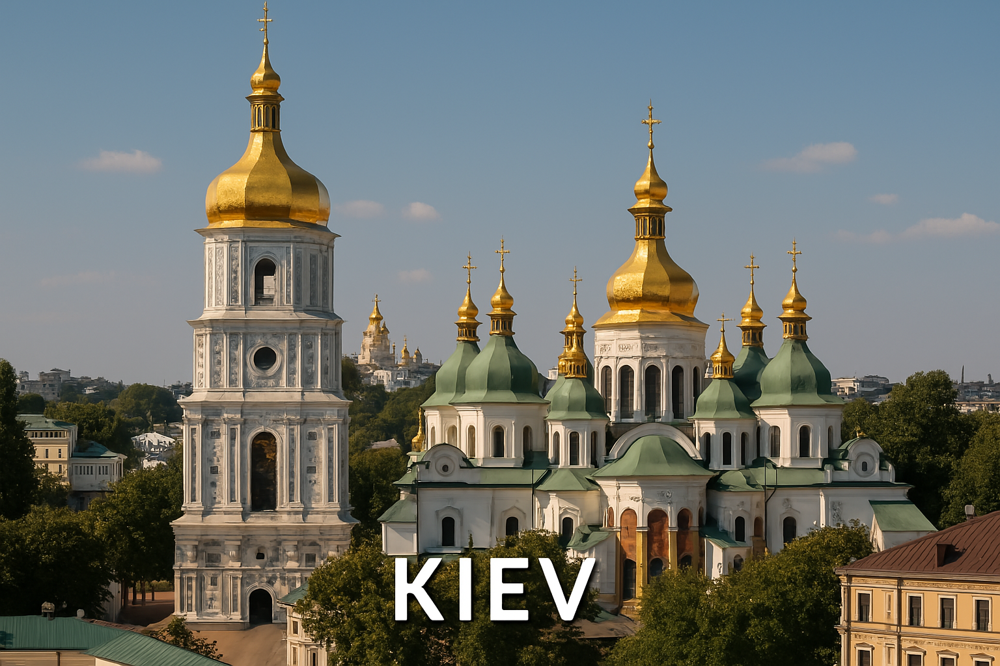

Kiev est une ville historique de l’Ukraine, célèbre pour ses églises aux dômes dorés, ses monastères anciens et sa culture vibrante.
La cathédrale Sainte-Sophie de Kiev est inscrite au patrimoine mondial de l’UNESCO ! 🏛️
Quelle cathédrale célèbre se trouve à Kiev ?